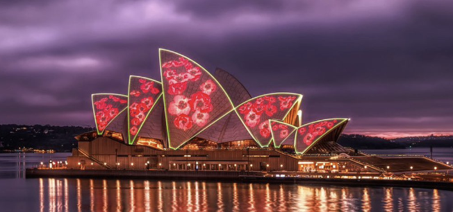
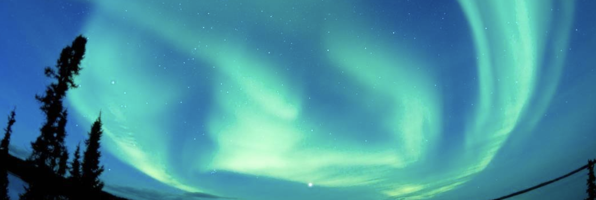
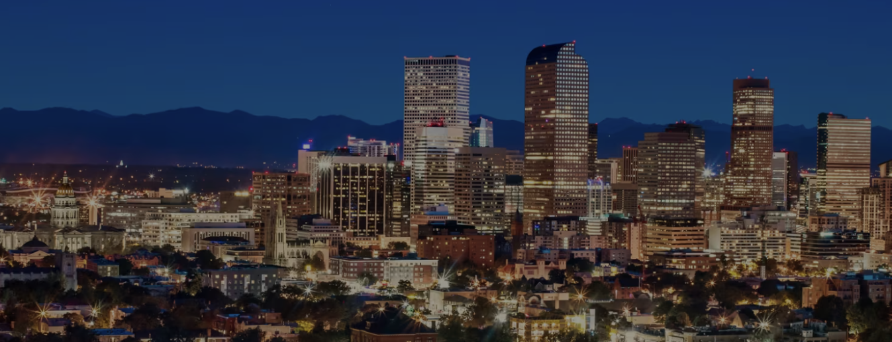

Our Top 3 Destinations to Travel in 2024
Australia
Australia, the smallest continent and one of the largest countries on Earth, lying between the Pacific and Indian oceans in the Southern Hemisphere. Australia's capital is Canberra, located in the southeast between the larger and more important economic and cultural centres of Sydney and Melbourne. The Australian mainland extends from west to east for nearly 2,500 miles (4,000 km) and from Cape York Peninsula in the northeast to Wilsons Promontory in the southeast for nearly 2,000 miles (3,200 km). To the south, Australian jurisdiction extends a further 310 miles (500 km) to the southern extremity of the island of Tasmania, and in the north it extends to the southern shores of Papua New Guinea. Australia is separated from Indonesia to the northwest by the Timor and Arafura seas, from Papua New Guinea to the northeast by the Coral Sea and the Torres Strait, from the Coral Sea Islands Territory by the Great Barrier Reef, from New Zealand to the southeast by the Tasman Sea, and from Antarctica in the far south by the Indian Ocean.
Click here to find out more about Australia
Copyright © 2023 Britannica and 2023 Australian Tourism
Canada
Canada, the second largest country in the world in area (after Russia), occupying roughly the northern two-fifths of the continent of North America. Despite Canada's great size, it is one of the world's most sparsely populated countries. This fact, coupled with the grandeur of the landscape, has been central to the sense of Canadian national identity, as expressed by the Dublin-born writer Anna Brownell Jameson, who explored central Ontario in 1837 and remarked exultantly on “the seemingly interminable line of trees before you; the boundless wilderness around you; the mysterious depths amid the multitudinous foliage, where foot of man hath never penetrated…the solitude in which we proceeded mile after mile, no human being, no human dwelling within sight.” Although Canadians are comparatively few in number, they have crafted what many observers consider to be a model multicultural society, welcoming immigrant populations from every other continent. In addition, Canada harbours and exports a wealth of natural resources and intellectual capital equaled by few other countries.
Click here to find out more about Canada
Copyright © 2023 Britannica and 2023 Canadian Tourism
USA
States, country in North America, a federal republic of 50 states. Besides the 48 conterminous states that occupy the middle latitudes of the continent, the United States includes the state of Alaska, at the northwestern extreme of North America, and the island state of Hawaii, in the mid-Pacific Ocean. The conterminous states are bounded on the north by Canada, on the east by the Atlantic Ocean, on the south by the Gulf of Mexico and Mexico, and on the west by the Pacific Ocean. The United States is the fourth largest country in the world in area (after Russia, Canada, and China). The national capital is Washington, which is coextensive with the District of Columbia, the federal capital region created in 1790. The major characteristic of the United States is probably its great variety. Its physical environment ranges from the Arctic to the subtropical, from the moist rain forest to the arid desert, from the rugged mountain peak to the flat prairie. Although the total population of the United States is large by world standards, its overall population density is relatively low. The country embraces some of the world's largest urban concentrations as well as some of the most extensive areas that are almost devoid of habitation.
Click here to find out more about USA
Copyright © 2023 Britannica and 2023 USA Tourism
Site Credits: Team 7
Thanks to ww3 schools and Bootstrap Docs
All factual information was based on freely available data